Renuncia de trabajadores
1. Preprocesamiento de datos
Tiene como objetivo obtener datos calibrados y de calidad con el fin de ayudar a establecer modelos predictivos para tomar decisiones calificadas. (Código del proyecto)
1.1 Análisis exploratorio
Una completa descripción de las variables recolectadas por cada cliente se presenta a continuación:
Revisamos las características generales de las variables: cuantas son, cuantos datos existen por variable, cuantos de éstos son nulos y que tipo de variable son.
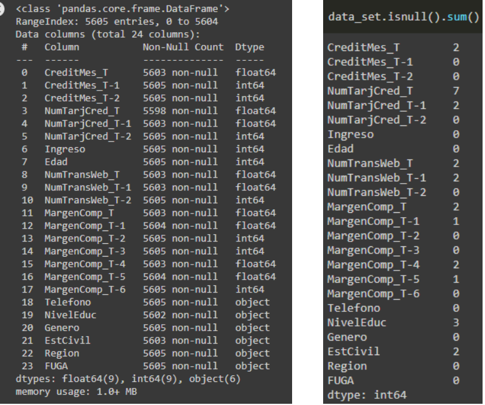Tenemos 24 variables, seis de ellas categóricas (Dtype=Object) y el resto numéricas, ya sea con o sin coma flotante (float64, int64)
Algunos índices estadísticos básicos para cada variable a calcular pueden ser: la media, percentiles, valores máximos y mínimos y desviación. Si la variable es categórica, cuantas categorías existen por variable, cual es la que más se repite (moda) y cuantas veces se repite. Las siguiente son las variables categóricas: Telefono, NivelEduc, Genero, EstCivil, Región.
Count: En total se debería mostrar información de 5605 clientes.
‘Teléfono’: La compañía posee el número de teléfono de todos los clientes, por eso muestra solo una variable categórica("SI") que es la que siempre se repite (moda)
‘NivelEduc’: Existen cuatro categorías de nivel educacional y la que más se repite (moda) es la Universitaria, 3627 veces. La variable presenta 3 datos perdidos.
‘Genero’: Hay tres categorías de género. La que más se repite es el masculino 3895 veces. Se investigará posteriormente de qué trata la tercera categoría.
‘EstCivil’: Cuatro categorías. La moda es casado, 2960 veces. La variable presenta 2 datos perdidos.
‘Region':Muestra una sola categoría, Región Metropolitana
‘FUGA’: Variable objetivo. Categórica, posee 2 categorías (cliente fugado: F, o activo: NF) siendo la que más se repite el activo 4889 veces
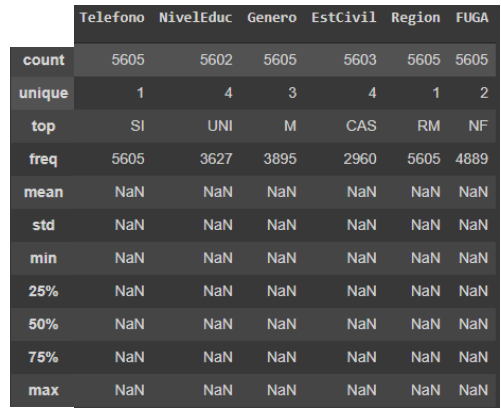Los indicadores ‘NaN’ indican que no existen, ya que para variables categóricas no tiene sentido calcular el promedio, el mínimo o el máximo, etc. Por ejemplo, es incoherente decir que existe un promedio entre un soltero y un casado, o que el valor máximo del género de una persona es el femenino o masculino.
Para la variables numéricas podemos establecer criterios como el promedio, la desviación, percentil, etc. Haremos el mismo ejercicio anterior, pero con una sola variable: CreditMes_T para explicar su interpretación:
Este análisis además es útil para observar valores poco realistas, como en las variables ‘Ingreso’ y ‘Edad’ donde existen valores inconsistentes. Por ejemplo, el valor mínimo del ingreso es negativo y el máximo en la edad es 131 años (posible pero improbable). Para comprobar esta información y otras de interés utilizaremos el análisis gráfico.
Análisis gráfico
El Análisis gráfico nos permite estudiar el comportamiento general de los datos, encontrar inconsistencias, relaciones entre variables, su distribución de frecuencias, entre otra información de interés.
La variable ‘Edad’ se representa en dos tipos de gráficos que muestra información valiosa.
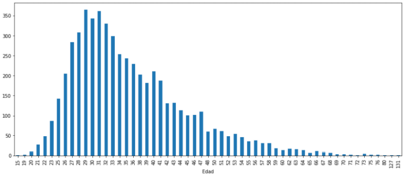 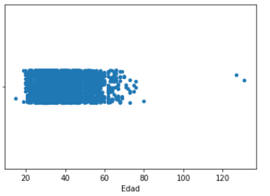Desde el histograma estándar se ve que la mayor cantidad de clientes se concentran aproximadamente en los 26 y 40 años, y del histograma de puntos se aprecia dos edades fuera de rango, 127 y 131 años
Para la variable ‘Ingresos’, deseamos observar variable negativa mostrada anteriormente. Para eso, incurrimos al histograma de puntos y ver si existen otros valores inconsistentes.
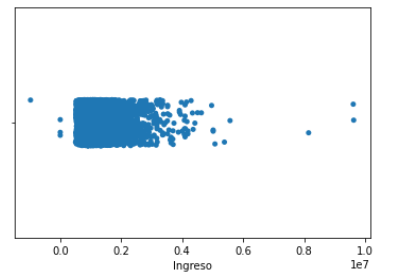Existe un solo valor negativo. Además, se observa que existen otros en el valor 0 o cercano, y algunos con ingresos muy altos. Nuestro criterio en este caso será mantenerlos porque son datos realistas y que pueden servir para nuestro análisis.
Para las variables categóricas, utilizaremos histogramas representados en barras, para observar su relación entre ellas y con la variable objetivo, y asi obtener información valiosa para estimar la proporción de fuga. Se muestra para la variable ‘NivelEduc’
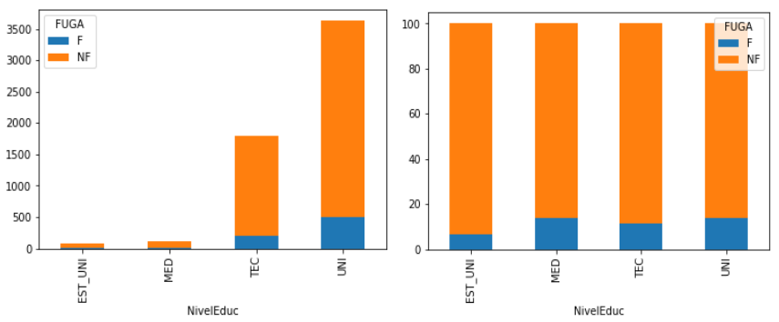Los gráficos nos muestran información valiosa. En el izquierdo vemos que la mayoría de los clientes tienen educación técnica o universitaria, mientras que muy pocos están aún en la universidad o en enseñanza media. Además, en el gráfico de proporciones a la derecha, la mayoría posee un porcentaje de fuga más o menos similar (un poco mayor a 10%), a excepción de los estudiantes universitarios que tienen un porcentaje menor, aunque éstos son muy pocos en relación con la cantidad total de clientes. Esta información nos sirve para, seguramente, establecer criterios de agrupación.
Para el atributo ‘EstCivil’ realizaremos el mismo ejercicio anterior. La figura muestra los histogramas asociados a esta variable:
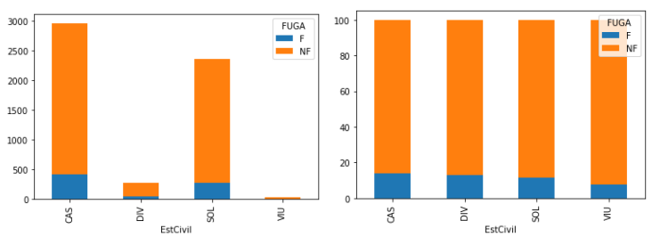La mayoría de los clientes son casados y le siguen solteros, mientras que una baja porción son divorciados y una ínfima parte son viudos. Al igual que con el nivel de educación, casi todas las variables tienen un nivel de fuga un poco mayor al 10%. En esta variable también se estudiará el uso de agrupación pues, por ejemplo, los que están viudos, a pesar de que presentan menos fuga que el resto, son tan pocos clientes que es muy probable que no afecte en el comportamiento de la variable objetivo.
La siguiente figura muestra la información de la variable género:
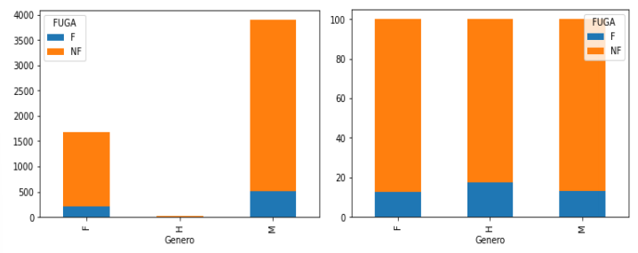La gráfica nos sirve para identificar la tercera categoría existente: ‘H’. Según información recibida de las personas que nos entregaron la información, esa categoría es la misma que ‘M’. Mas adelante se ralizará la agrupacion. Se observa que la mayoría de los clientes son hombres, pero la proporción de fuga entre ambos es similar, entre 10 y 15%.
Otro tipo de gráfico de interés son los box-plot, mostrados a continuación:
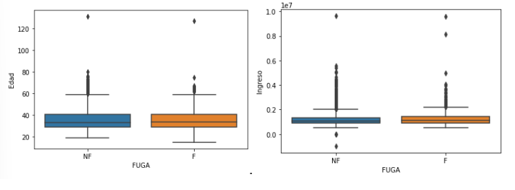Los que se fugan y no se fugan tienen prácticamente el mismo rango de edad, concentrado entre los 30 y 40 años, y los mismos ingresos, entre 1.5 y 1.7 millones aproximadamente. La media, representada por la línea negra dentro de los “Box”, nos indican que tanto los que se fugan como los que no, tiene una edad promedio de 35 años aproximadamente con ingresos medios alrededor de los 1.6 millones.
Se aprecia que los box-plot muestran variables categóricas en el eje x y numérica en el eje y. Este ejercicio se realizó también para las variables de CreditMes y MargenComp, pero muestra datos muy concentrados como para apreciar claramente lo que ocurre.
1.2 Limpieza de datos
Esta etapa del procesamiento nos permitirá reconocer los datos irregulares que no nos servirán en el análisis, y según sea el caso, establecer criterios de eliminación o sustitución por algún valor equivalente.
Inconsistencias
Las inconsistencias son datos incoherentes o poco realistas que aparecen comúnmente en las bases de datos. Declaramos los valores que están fuera de rango como valores perdidos, para poder identificarlos. Se anulan los datos negativos de la variable ingreso y los mayores a 100 años en la edad. Así, se aprecia que se agrega un valor nulo en la variable ingreso y dos en la edad, nulos que no existían antes.
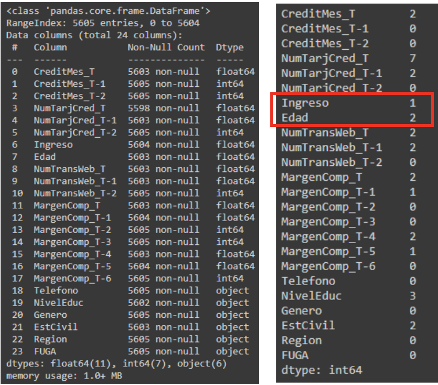La información anterior se representa en los histogramas de puntos siguientes:
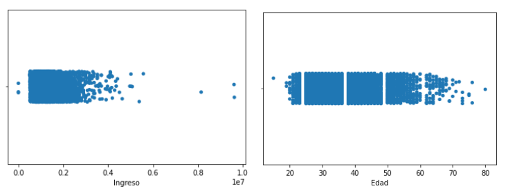Los valores negativos de los ingresos y lo que estaban sobre 100 de la edad ya no están presentes. Pero esos datos no están presentes porque se perdieron. Luego, estudiaremos que criterio estableceremos para recuperarlos.
Imputación valores perdidos
La imputación consiste en reemplazar los datos perdidos por alguno que no cambie sustancialmente el comportamiento de los datos. Como los valores perdidos son menores al 5%, podemos reemplazar los valores perdidos por la media las variables numéricas, y por la moda en las categóricas. La tabla siguiente muestra lo realizado:
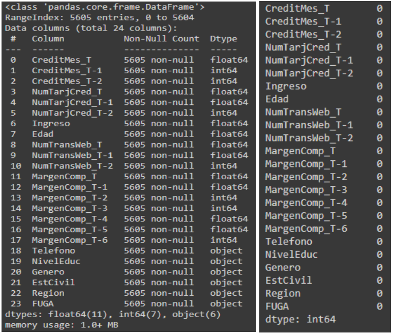Observamos que con la imputación múltiple logramos eliminar los nulos y se verifica que ya no falta ningún dato.
Existen otras dos opciones, como la eliminación de casos y la imputación simple (simulación). La primera no se eligió porque lo que hace es, donde existe un valor nulo, elimina la fila completa y se corre el riesgo de perder datos importantes. La segunda tampoco se eligió, porque la cantidad de datos perdidos no fueron tantos como para realizar una simulación.
1.3 Transformación de datos
La transformación de los datos nos permite agrupar datos, construir atributos, reducir sus clases, escalarlos con funciones matemáticas, mapearlos, con la finalidad de mejorar la capacidad de discriminación de una variable, dar algún significado matemático a ellas como también igualar sus pesos relativos
Transformar al promedio
La primera transformación a realizar consiste en promediar algunas variables que tienen información de diferentes períodos, como los últimos meses de crédito, transacciones, número de tarjetas de crédito y el margen. Así se crearán nuevas variables con el valor promedio de los atributos mencionados. Las variables promedio a crear serán las siguientes:
'AvrCredit'= Prom('CreditMes_T', 'CreditMes_T-1','CreditMes_T-2’)
'AvrTarj' = Prom('NumTarjCred_T','NumTarjCred_T-1', 'NumTarjCred_T-2']
'AvrTrans= Prom('NumTransWeb_T','NumTransWeb_T-1','NumTransWeb_T-2
‘AvrMarg’=Prom(‘MargenComp_T’,’MargenComp_T-1’,’MargenComp_T-2’,’MargenComp_T-3’, ‘MargenComp_T-4’, MargenComp_T-5’, MargenComp_T-6’)
De estas forma, las variables “Avr” son las que mantienen en el modelo mientras que los atributos que se usaron para crear estas nuevas variables se eliminan.
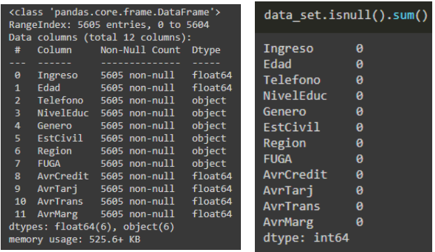
Transformación a una nueva escala
Esta transformación nos permite reducir la cantidad de variables de 24 a 12. Además, en algunas de las variables transformadas, cambió de tipo: de discreta a continua
Este ejercicio lo realizamos con las variables‘AvrCredit’, ‘AvrMarg’ e ‘Ingreso’, transformándolos usando la función logaritmo para reducir la concentración en los datos. A la izquierda se muestra el histograma antes de la transformación y a la derecha después de ella.
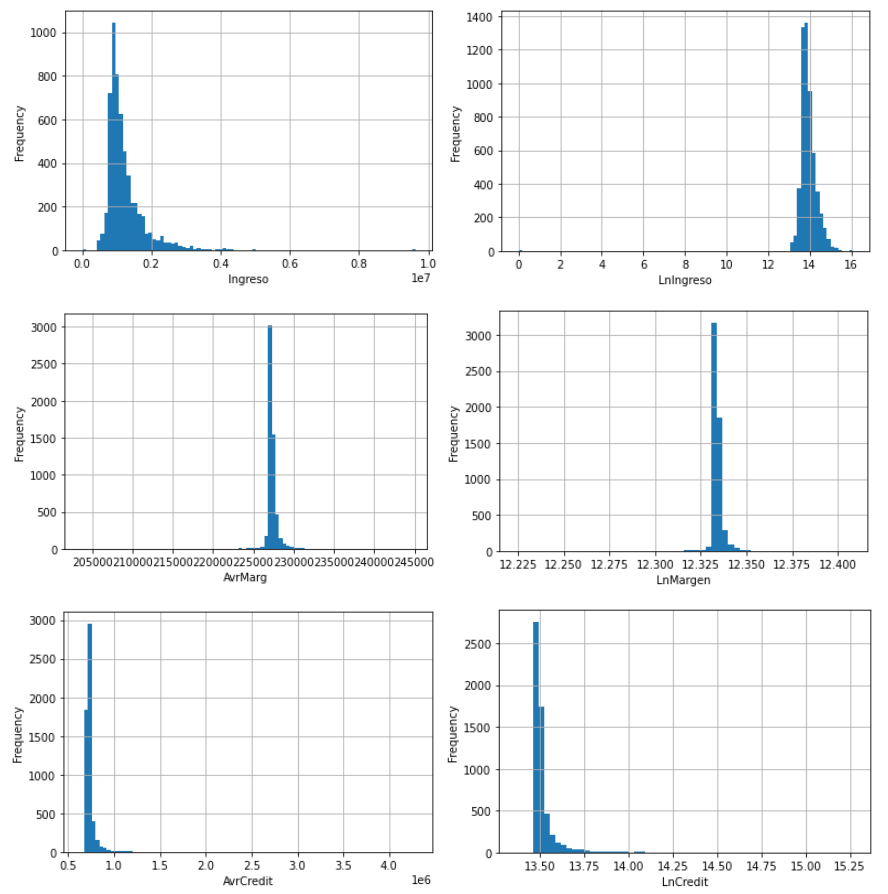La transformación no logró descentralizar los datos,porque la gran mayoría de éstos ya se encontraban muy concentrados. Para lo que sí nos sirvió fue para modificar la escala y disminuir el rango de valores, como vemos en el ingreso, donde el rango disminuyo entre aproximadamente 500 mil y 10 millones, a un rango entre 13 y 16.
No transformamos la escala en las variables ‘AvrTarj’ y ‘AvrTrans’, pues estas son consideradas en este estudio como variables “contadoras” y no poseen la misma naturaleza que las financieras. Por eso, solo se les mantuvo el promedio.
Los beneficios descritos anteriormente gracias a la transformación realizada permiten mantener los atributos transformados y eliminar aquellos que nos permitieron realizar la transformación:
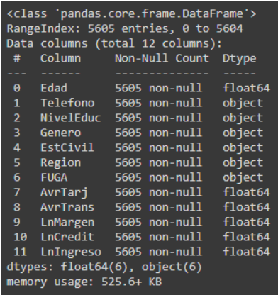Agregación
La agregación nos permite aplicar operadores a una o más variables, reducir los atributos de las muestras y en general, crear conocimiento al momento de crear este tipo relaciones que no siempre son triviales.
A partir del análisis exploratorio de datos, observamos que existen algunos atributos que presentan muy pocos datos, como los que aún no tienen la educación profesional completa y los clientes con estado civil viudo. Además, en la variable ‘Genero’ existía una cantidad ínfima de datos que poseen categoría H. Así, realizaremos la agregación para estas variables
Para la variable educación agruparemos sus datos para reducir sus clases. Por lo tanto, uniremos dos clases en una. Los nuevos atributos se llamarán ‘Completa’ a los que tienen educación técnica y universitaria, e ‘Incompleta’ a los que tienen educación media y universitaria incompleta
TEC + UNI = Completa
EST_UNI + MED = Incompleta
Para el estado civil hacemos algo similar. A los que son viudos los juntamos con los divorciados para formar la categoría “OTRO”
VIU + DIV = OTRO
En la variable Genero por error algunas variables 'M' fueron escritas como 'H', luego reemplazamos la variable 'H' por la 'M'. En la tabla podemos ver el resultado de la reducción de las variables:
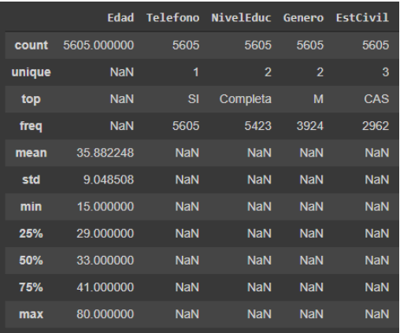Graficando las variables categóricas a las que se les realizó la transformación usando el histograma de barras para revisar si hubo un cambio drastico en relacion a la variable objetivo FUGA
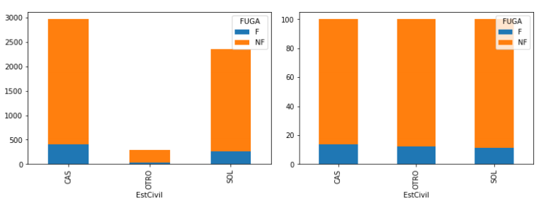 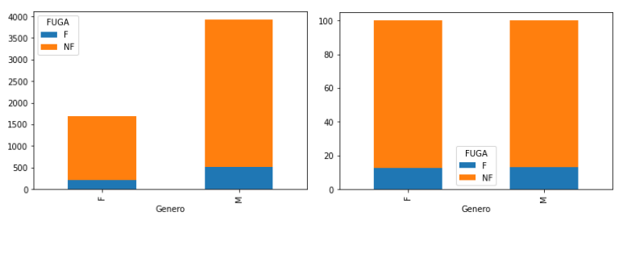 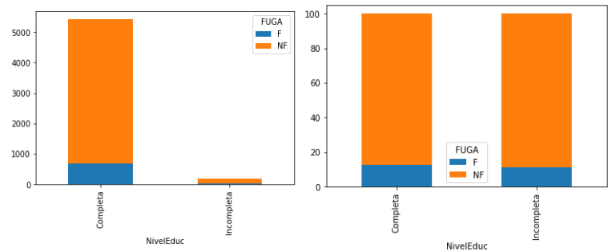vemos que no existen grandes diferencias en el comportamiento y proporción de las variables con respecto a la objetivo ‘FUGA’, comparado con el análisis exploratorio.A pesar de que la educación incompleta presenta una cantidad muy reducida de datos, la dejaremos para mejor análisis del modelo.
Transformar a variable binaria
Aquí se utilizan variables “Dummy” en las categóricas, con el fin de aumentar las variables numéricas y así facilitar las tareas de los algoritmos en la construcción del modelo. Queremos transformar categóricas específicas a variable binaria, cuando 0 es FALSE y 1 es TRUE, para simplificar el análisis matemático de los datos.
La idea es, si tenemos una variable con N categorías, crear N-1 variables dummy. Así, si una variable categórica con dos clases en el data set obtiene el valor 0, entonces la que no está presente tendrá valor 1, y si es de tres clases, si dos tienen valor 0 entonces la tercera tendrá valor 1. El resultado es:
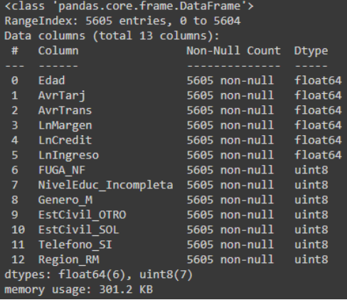Se observa que todas las variables categóricas cambiaron su naturaleza a variable numérica binaria (uint8). De esta forma, la categoría M de la variable ‘Genero’ se transformó en la variable binaria ‘Genero_M’. Luego, si esta variable obtiene el valor 0, será la variable ‘Genero_F’ la que tendrá valor verdadero y será considerada en el modelo, en caso contrario, será la variable Genero_M. De la misma forma se tratan las otras variables binarias. A continuación se muestra como el valor máximo de las variables antes categóricas y ahora discretas toman valores min=0 y max=1.
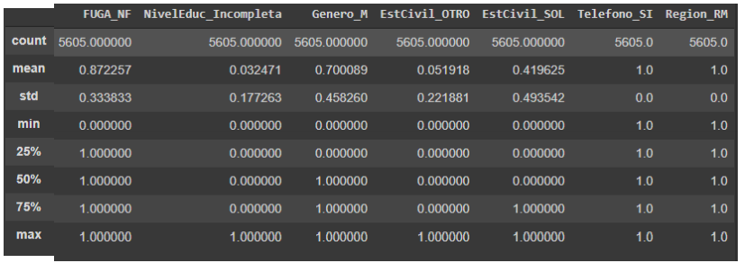Atención especial merece las variables ‘Telefono_Si’ y ‘Region_RM’. Estas variables presentan una sola categoría, por lo que siempre obtendrán el valor 1. Mas adelante se analizará la forma de
Discretización
Consiste en transformar las variables continuas a categóricas. Con esto aumentamos las variables para crear mejor discriminación de ellas. De esta manera se logra dividir el rango de un atributo en intervalos. Estose usa generalmente cuando la variable continua esta muy concentrada o cuando no presenta un comportamiento lineal.
Hay que establecer un criterio para dividir las variables, en este caso estableceremos percentiles. Lo haremos para la variable ‘Edad’, ‘LnMargen’, ‘LnCredit’, ‘LnIngreso’, pues son las variables continuas que tenemos. Recordar que las variables AvrTarj y AvrTrans las consideramos “contadoras”, por esa razón no las discretizamos.
Definimos la forma estándar para establecer cuantiles, con el 20% de la variable en cada intervalo: [0, .2, .4, .6, .8, 1]. Empezaremos con la variable edad, que no presenta un comportamiento lineal.
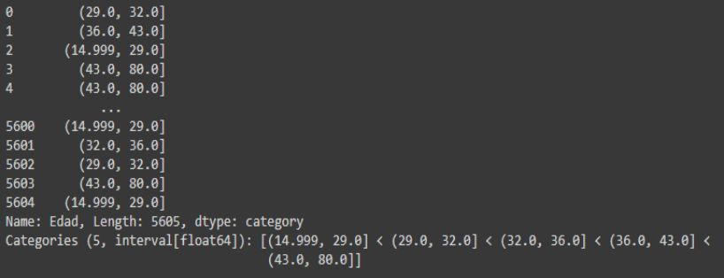la variable se divide en 5 intervalos: (14.999, 29.0] < (29.0, 32.0] < (32.0,36.0] <(36.0, 43.0] < (43.0, 80.0). Esta variable discretizada es nueva, llamada Edad_binned. Entonces ‘Edad_binned’ será la variable ‘Edad’ discretizada. Los paréntesis en los intervalos representan valores abiertos y los corchetes, cerrados.
De la misma manera proseguimos con las variables financieras LnMargen, LnCredit, LnIngreso
LnMargen (LnMargen_binned)
(12.224, 12.3328] < (12.3328, 12.3332] < (12.3332, 12.334] < (12.334, 12.3352] < (12.3352, 12.4071]
LnCredit (LnCredit _binned)
(13.364, 13.482] < (13.482, 13.488] < (13.488, 13.5] < (13.5, 13.523] < (13.523, 15.272]
LnIngreso (LnIngreso _binned)
(-0.001, 13.674] < (13.674, 13.803] < (13.803, 13.953] < (13.953, 14.212] < (14.212, 16.08]
Para las variables AvrTrans y AvrTar, se intento discretizar para observar que ocurría, y el código presenta error. La variable que estamos intentado discretizar toma muy pocos valores distintos y por lo tanto no hay datos suficientes para crear 5 intervalos.
2. Selección de atributos
El objetivo de la selección de atributos es elegir un conjunto de atributos relevantes, eliminando los que podrían generar ruido y confunden al modelo.
Utilizaremos el método de filtro, consistente en eliminar variables inútiles, estudiar correlación entre los atributos o redundancia y evaluar cuales son las más relevantes.
2.1 Inutilidad
Este criterio consiste en encontrar las variables muy concentradas. Para esto calculamos la desviación estándar de las variables. Los resultados se muestran a continuación:
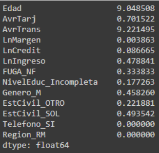A mayor concentración, menor desviación. De los valores anteriores se evidencia que existen dos variables con desviación 0: Region_RM y Telefono_Si. Esto, debido a que solo presentan una categoría cada una, por lo que su concentración es absoluta. Luego, es seguro eliminarlas. Observamos ademas una variable con una concentración muy baja: LnMargen = 0.003863. A pesar de que es un valor muy bajo, lo dejaremos para ver si más adelante presenta relevancia.
2.2 Redundancia
Este criterio consiste en encontrar las variables que están muy correlacionadas porque entregan resultados similares. En los modelos estadísticos los atributos deben ser independientes, para que el valor de uno no tenga impacto en el otro. Si existe redundancia entre dos atributos solo se debe borrar uno de ellos. Para evaluar este citerio usamos la matriz de correlación representado como gráfico de color:
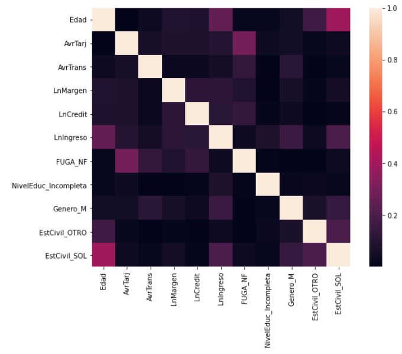Para que exista correlación entre dos variables, criterio consiste en que si existe un valor entre 0.9 y 1 existe redundancia (color claro). Observar que todas las variables existentes no presentan redundancia entre ellas ya que ninguna entrega un resultado similar a otra
2.3 Relevancia
Este criterio consiste en elegir que variables son más relevantes para predecir la variable objetivo.Se pueden usar principalmente dos métodos: Test chi-cuadrado para variables categóricas y ANOVA para atributos numéricos. Primero se debiera usar el test chi-cuadrado para estudiar correlaciones entre variables nominales y luego para elegir las variables más relevantes.
Según los resultados obtenidos en el gráfico de calor, no es necesario realizar el test, ya que se demostró que no existen correlación entre las variables.
Luego, seleccionaremos los atributos son relevantes. Elegiremos los 5 primeros para tener una referencia. Esto se realiza con el test KBest junto con el chi-cuadrado.
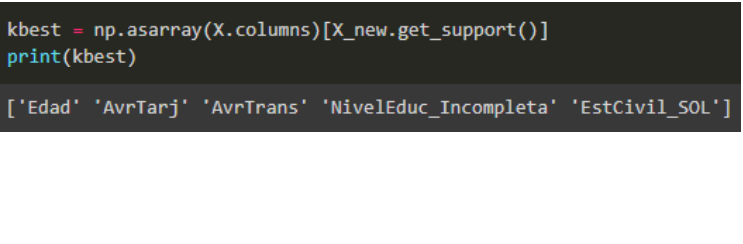3. Normalización
La normalización pretende aplicar una función matemática a una variable continua para cambiar su rango. De esta forma iguala el tratamiento de cada variable. En nuestro caso, se realiza la normalización min-max. Lo que hace es una transformación lineal usando los mínimos y máximos de los datos originales, creando nuevos mínimos y máximos. Con esto ya podemos exportar la base de datos preprocesada. Los resultados de la normalización se muestran a continuación:
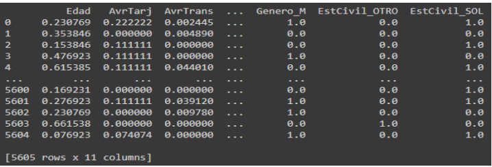